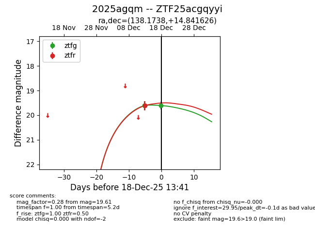
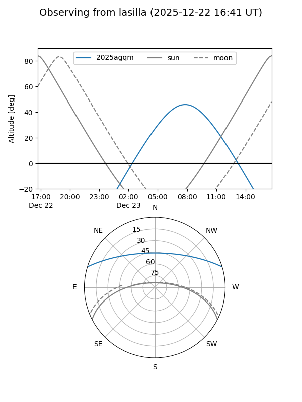
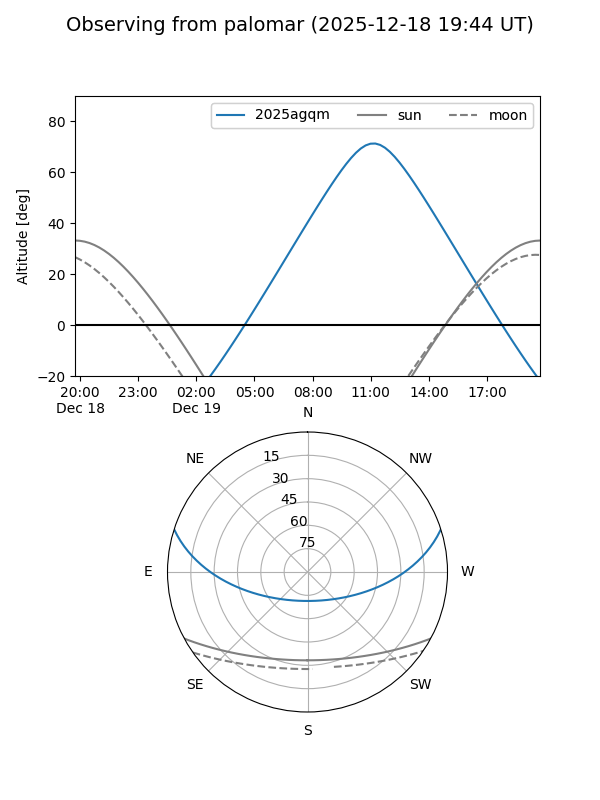

2025agqm
Target 2025agqm at 2025-12-31 16:59
Aliases and brokers:
FINK:
Lasair:
ALeRCE:
TNS:
YSE:
alt names
ZTF25acgqyyi (ztf,fink_ztf)
2025agqm (tns,yse)
Coordinates:
equatorial (ra, dec) = 138.1738,+14.84163
equatorial (HMS+DMS) = 09:12:41.71,+14:50:29.85
galactic (l, b) = (214.8797,+37.88681)
Flags:
Photometry:
last ztfg=19.74, ztfr=19.65
3 ztfg, 2 ztfr detections
Lightcurve

Visibility


Additional plots